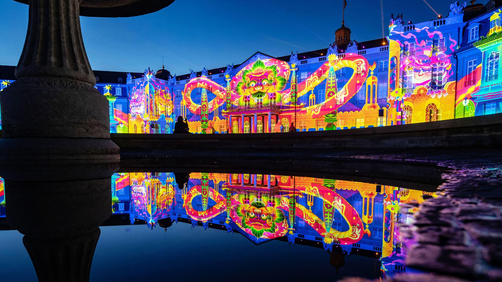

Карлсруе : культура

Місто Карлсруе має жвавий культурний ландшафт, який поєднує історію та сучасність, мистецтво та технології. Для дітей і молоді, дорослих чи людей похилого віку – різноманітні культурні пропозиції в Карлсруе пропонують щось для кожної цільової групи.
Баденський державний театр є одним із найбільших багатопрофільних театрів Німеччини і включає оперу, балет, концерт, драму, народний театр і Молодий державний театр. Багато аматорських театрів і приватних театрів, таких як Sandkorn, Jakobus і Kammertheater, збагачують репертуар Карлсруе. Ті, хто цікавиться літературою, знайдуть повний вибір різних засобів масової інформації в Літературному товаристві Карлсруе, у Музеї літератури на Верхньому Рейні та в бібліотеках. Карлсруе також є музичним містом, де виступають великі виконавці класики, поп-музики, року та джазу. Університет музики має міжнародну репутацію.
Особливі фестивалі та події доповнюють культурний календар Карлсруе: мистецтво КАРЛСРУЕ щороку приваблює більше відвідувачів з-за кордону та з усієї Німеччини, традиційний музичний фестиваль DAS FEST, світлові шоу замку захоплюють сотні тисяч у літні місяці та в Карлсруе Ніч музеїв KAMUNA — усе місто на ногах.